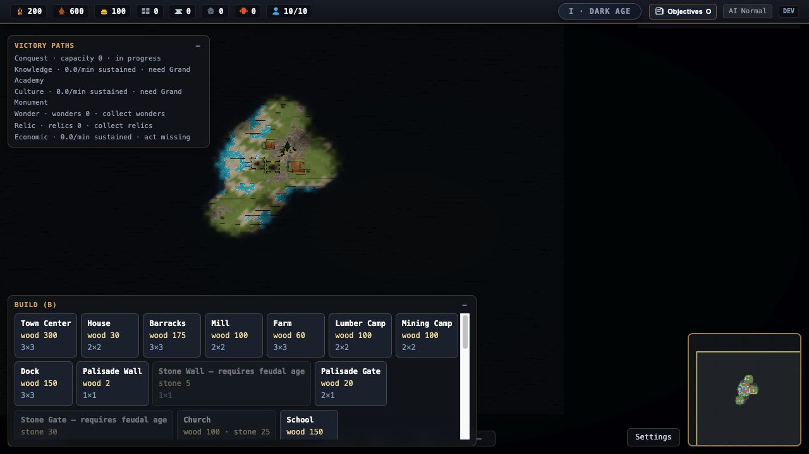

Unity URP + Rust
python3 /tmp/game-hybrid-engine-prototype/prototypes/hybrid/tools/run.py unity --view BGodot + Rust
python3 /tmp/game-hybrid-engine-prototype/prototypes/hybrid/tools/run.py godot --view BUnity URP, Godot Forward+ and the existing WebGPU terrain study, connected to a Rust simulation slice. All retain the tactical, settlement and coastal views. Compare the same CC0 assets, 500 Pop stand-ins and a saved reference frame at a 1600×1000 internal render target.
Rust parallel jobs + cross-language state parity verifiedpython3 /tmp/game-hybrid-engine-prototype/prototypes/hybrid/tools/run.py unity --view Bpython3 /tmp/game-hybrid-engine-prototype/prototypes/hybrid/tools/run.py godot --view BNative visual clients can consume an independent Rust simulation. The integer behavior slice matches its TypeScript reference at 500 / 2,000 / 10,000 Pops and 1 / 2 / 4 / 8 workers. The current light workload usually runs faster serially: scheduling costs more than it saves. These are capsule stand-ins and a limited movement/needs/delivery simulation, not a port of the full RTS.
The existing full game uses WebGL2 and retains the economy, combat, fog, social systems, saves and victory logic. The three comparable coastal scenes above are a separate visual test bed. Improved framing or materials in that test bed are not proof that a full engine migration has succeeded.

Godot is the leading alternative for free-code reuse. Its engine, Terrain3D, Phantom Camera and Open RTS offer MIT-licensed foundations. Community version/renderer compatibility still needs testing; this scene does not yet integrate those addons.
The art advantage is shared. Our Quaternius, Kenney, ambientCG and Poly Haven CC0 assets can work in either engine. Unity has glTFast under Apache-2.0 and useful first-party packages, but several camera/sample code licences are Unity-dependent.
| Client / view | p50 | p95 | Samples |
|---|
Observations from this shared Mac desktop session. Browser/native refresh policies, background compilers and screenshot readback differ. Unity requests 120 fps; the browser and Godot captures landed around 60 Hz. The clients also use different stand-in rendering paths. These are frame intervals, not GPU timestamps or an engine throughput ranking.
| Pops | Implementation | Workers | p50 tick | p95 tick | State parity |
|---|
The simulation uses fixed integer coordinates, entity-based cadence, disjoint parallel batches and canonical commit order. Recorded tick timings exclude digesting, snapshot serialization, transport and rendering. A full workload profile is still needed before selecting parallel partition sizes or promising population capacity.
The current game still contains pathfinding, combat, complex social/economic systems, fog, saves/replays, campaigns and victory logic absent from this slice. Actors can overlap obstacles. No full-game speedup, save compatibility, animation scalability or production packaging claim is made. Native engine builds are local artifacts; source, scripts and evidence are on the prototype Git branch.
python3 /tmp/game-hybrid-engine-prototype/prototypes/hybrid/tools/run.py unity --view B python3 /tmp/game-hybrid-engine-prototype/prototypes/hybrid/tools/run.py godot --view B python3 /tmp/game-hybrid-engine-prototype/prototypes/hybrid/tools/run.py bench node prototypes/hybrid/tools/ts-reference.mjs